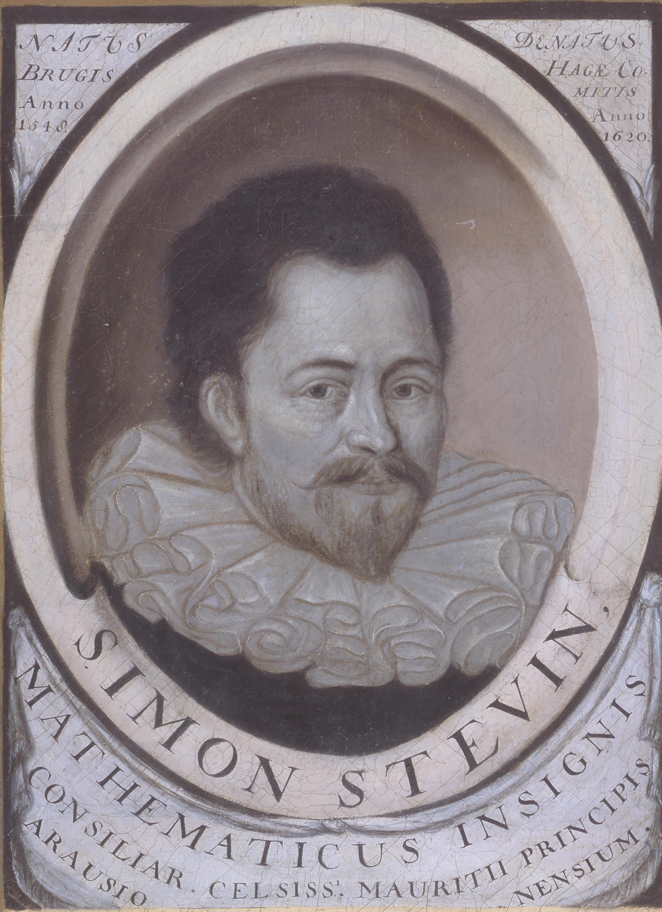
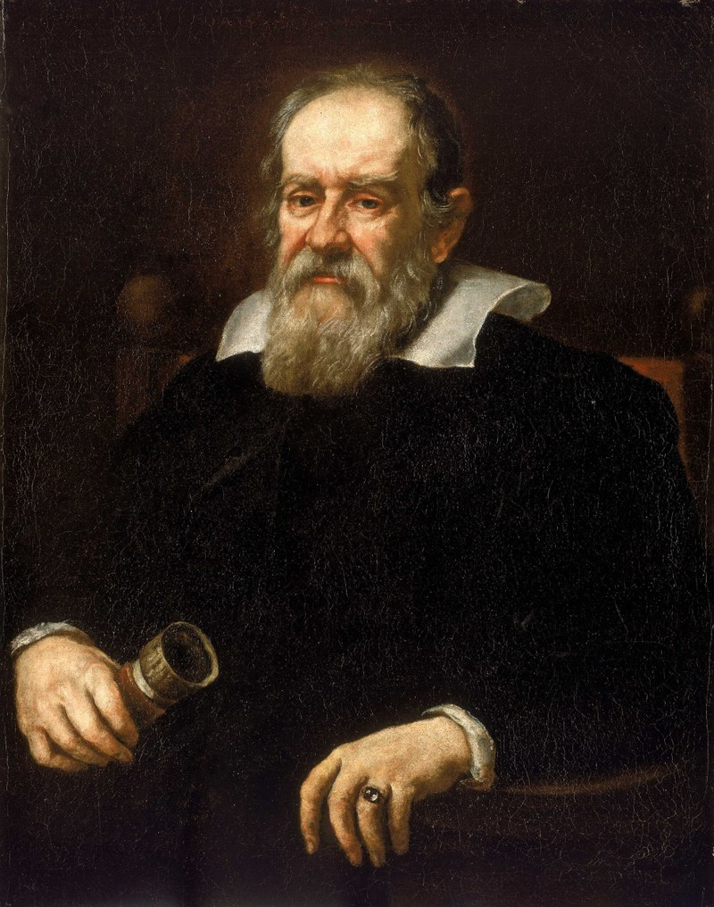

Ancient Scientists
Pre 17th Century.
Simon Stevin
| Born: | 1548 |
| Died: | 1620 |
| Known for: | Delft tower experiment |
Delft tower experiment
In 1586, scientists Simon Stevin and Jan Cornets de Groot conducted an early scientific experiment on the effects of gravity. The experiment, which established that objects of identical size and different mass fall at the same speed, was conducted by dropping lead balls from the Nieuwe Kerk in the Dutch city of Delft. The experiment is considered a foundational moment in the history of statics, which Stevin's work helped to codify.
Galileo Galilei
| Born: | 1564 |
| Died: | 1642 |
| Known for: | Leaning Tower of Pisa experiment |
Leaning Tower of Pisa experiment
Between 1589 and 1592, the Italian scientist Galileo Galilei (then professor of mathematics at the University of Pisa) is said to have dropped "unequal weights of the same material" from the Leaning Tower of Pisa to demonstrate that their time of descent was independent of their mass, according to a biography by Galileo's pupil Vincenzo Viviani, composed in 1654 and published in 1717. The basic premise had already been demonstrated by Italian experimenters a few decades earlier.
Ibn al-Haytham

| Born: | 965 |
| Died: | 1040 |
| Known for: | Scientific method |
Scientific method
"Therefore, the seeker after the truth is not one who studies the writings of the ancients and, following his natural disposition, puts his trust
in them, but rather the one who suspects his faith in them and questions what he gathers from them, the one who submits to argument and demonstration,
and not to the sayings of a human being whose nature is fraught with all kinds of imperfection and deficiency. The duty of the man who investigates
the writings of scientists, if learning the truth is his goal, is to make himself an enemy of all that he reads, and ... attack it from every side.
He should also suspect himself as he performs his critical examination of it, so that he may avoid falling into either prejudice or leniency."
— Alhazen
Archimedes
| Born: | 287 BC |
| Died: | 212 BC |
| Known for: | Archimedes' principle |
Archimedes' principle
Archimedes' principle (also spelled Archimedes's principle) states that the upward buoyant force that is exerted on a body immersed in a fluid, whether fully or partially, is equal to the weight of the fluid that the body displaces. Archimedes' principle is a law of physics fundamental to fluid mechanics. It was formulated by Archimedes of Syracuse.